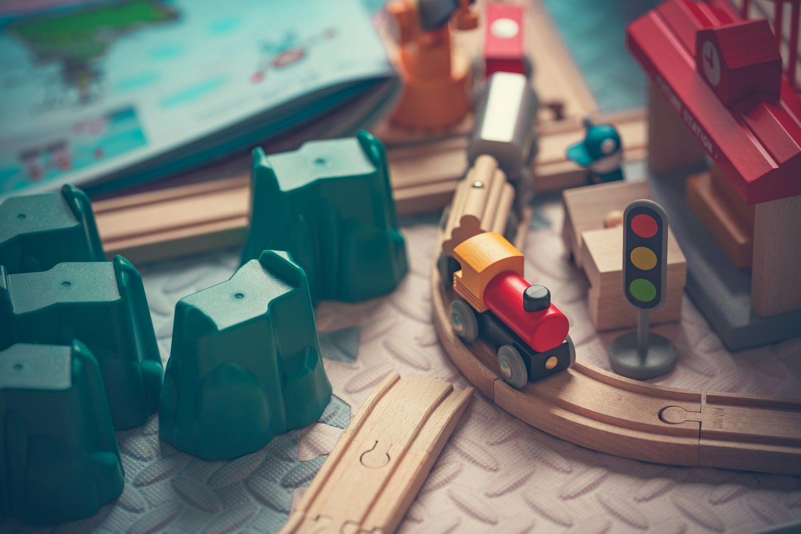

朝も夕方も、体調をくずした日も。はたらくご家庭のとなりで、こどもの一日をあずかります。
お知らせ一覧を見る →
かみのて保育園は7:00〜20:00、かみのて今渡保育園は7:30〜19:30。早番も遅番も、ご家庭のはたらき方に合わせてお預かりします。
かみのて保育園に併設した病児保育室で、生後6ヵ月から小学校6年生までお預かりします。他の園や小学校に通うお子さまも利用できます。
英語・タガログ語・ビサヤ語・ポルトガル語に対応。外国にルーツのあるご家庭も安心して通えるよう、文化のちがいを前提にした保育をしています。
こどもたちの過ごし方や、先生とのやりとり。実際に見ていただくのがいちばんです。入園のご予定がなくても、ご相談だけでもかまいません。